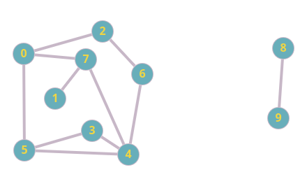

Grafos
Lista de adjagências
Qualquer operação para percorrer os vértices para proucurar as arestas vamos gastar um tempo proporcional a v^2, por isso vamos utilizar as listas adjacentes, por mais que podemos utilizar aquelas técnica de não preecisar olhar os vertices meenores da matriz, ainda temos um tempo não muito agradável para esse tipo de problema, ainda mais com muitas arestas e vértices. Uma maneira diferente mas que tem sua funcionalidade, ao invés de termos uma matriz teremos como se fosse um grande vetor, e cada "coisa" dentro desse vetor seja uma lista encadeada, e quando tiver uam aresta teremos um nó saíndo dessa posição do vetor e mostrando ao qual ele está ligado, e se não estivermos falando de um grafo dirigido, o outro também terá seu nó apontado para ele.
Vamos fazer nossas operações, são essencialmente as mesmas da matriz de adjacência, somente tomando cuidado sabendo que estamos falando de uma fila e não de uma matriz, adicionaremos então o nó.
Estrutura do nó em lista de adjacências
typedef struct node *link
struct node {int v; link next;}; // Struct das arestas
struct graph{int V; int E; link *adj;};
link NEW(int v; link next){
link x = malloc(sizeof *x); // Cria a aresta
if(x == NULL)
tela_azul(); // Não encontrou , ou não foi criado nenhuma estrutura
x->v = v; // Adiciona na struct o v
x->next = next; // Coloca o link para a próxima dentro da struct
return x;
}
graph GRAPHInit(int V){ // Cria o grafo
int v;
Graph G = malloc(sizeof *G); // Aloca a quantidade de espaço para os vértices
G->v = V; // Recebe os vértices colocados
G->E = 0; // Zera as arestas
G->adj = malloc(V*sizeof(link)); // Cria nosso vetor de adjacências
for(v = 0; v < V; v++)
G->adj[v] = NULL; // Criamos uma lista de adjacências e indicamos que estão apontando para NULL, já que não temos arestas no momento.
return G;
}
void GRAPHInsert(Graph G, Edge e){ // Insere uma aresta
int v = e.v, w = e.w;
G->adj[v] = NEW(w, G->adj[v]); // Inserimos no início da lista simplesmente por ser mais barato.
G->adj[v] = NEW(v, G->adj[w]);
G->E++;
}
int GRAPHEdges(Edge a[], Graph G){ // Salva as arestas em um vetor e retorna a quantidade
int v, E=0; // Com a chamda a[], se tem que ja foi alocado o vetor do tamanho correto previamente
for(v = 0; v < G->v; v++)
for(t = G->adj[v]; t != NULL; t = t->next)
if(v < t-> v)
a[E++] = EDGE(v, t->v);
return E;
}
Que método devo usar?
Comparação entre vetor de arestas, matriz de adjacência e lista de adjacência.
| Vetor de arestas | Matriz de adjacências | Lista de adjacências | |
|---|---|---|---|
| Espaço | E (quantidade de arestas) | V^2 (vértices ao quadrado) | V+E |
| Preço para inicializar | 1 | V^2 | V |
| Copiar | E | V^2 | E |
| Destruir | 1 | V (free em cada vértice) | E (Para cada vértice percorre todas as arestas) |
| Inserir arestas | 1 | 1 (Lê o v e o w, e coloca valor 1 na matriz) | 1 (Alocar 2 nós um para v e um para w, adicionando sempre no início da lista encadeada) |
| Encontrar e remover uma aresta | E | 1 (Pergunta se v e w é 1, e se quiser é só remover) | V (O máximo de arestas que um vértice pode ter é exatamente a quantidade de vértices total) |
| V é isolado? (Se não tiver nenhuma aresta conectada ao vértice) | E (Anda em todas as arestas buscando uma relação com outro V) | V (percorre toda coluna do vértice para ver se todos os índices estão marcados como 0) | 1 (Basta perguntar no índice para o V se é NULL) |
| Caminho de U para V | E.log(V) | V^2 (Percorrer todas as arestas de U até chegar a v, logo se vê todas as conexões da matriz) | V+E |
Busca em profundidade (DFS)
Se eu quero passar por todos os vértices passando pleo menor caminho possível, como posso fazer isso? A busca em profundidade é um ótima tentativa para achar labirintos. Imagine um corredor com 3 saídas vamos tomar uma decisão de onde ir, para isso vamos usar as pilhas.
Busca em profundidade
int pre[V];
void dfsR(Graph G, Edge e){
int t, w = e.w;
pre[w]=count++; // Mantém a ordem de qual visitamos primeiro, e mostra quais vértices já foram visitados.
for(t = 0; t < G->V, t++)
if(G->adj[w][t] != 0)
if(pre[t] == -1) // Para quando todos estiverem com valor diferente de -1, ou a função acaba e passamos por todos os vértices conexos por w
dfsR(G, EDGE(w, t));
}
int main(){
GRAPHInit(V);
for(int V = 0; V < G->V; V++)
pre[v] = -1;
dfsR(G, EDGE(0, 0));
}
Se fizermos algo parecido com o código de cima no grafo de baixo, começando do dfsR(G, EDGE(0,0)), ele percorrerá todos de 0 até 0 passando por todos os caminhos, mas perceba que nenhuma aresta passa pelo 0 e qualquer outro vértice e chega em 8 ou 9, logo ele não perocrrerá em momento nenhum esses vértices.
Se diferentemente executarmos a função dfsR(G, EDGE(8,8)), ele executará somente um caminho de 8->9, tendo em vista que só tem esse caminho, e nós nesse modelo só contabilizamos a ida, já que a ida e a vinda é a mesma aresta.
Grafo 5: Grafo exemplo
Fonte - Autoral